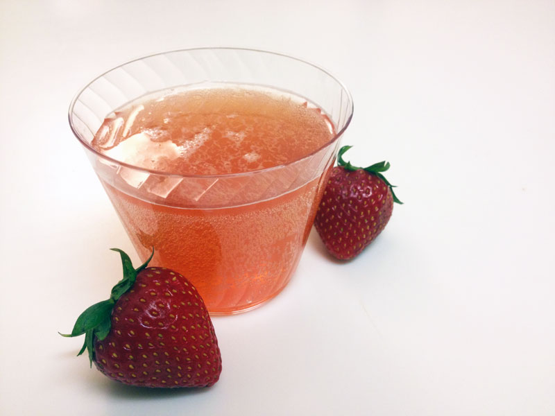

Strawberry Fizz

Description
A zesty refreshment for afternoons at the height of summer.
Brings together fresh strawberries, local honey, and sparkling water
Ingredients
- 1.5 cups water
- 1/8 cup sugar
- 1/8 cup honey
- 2 cups fresh strawberries
- 1.5 cups sparkling water
Steps
- In a large pot, boil water.
- Stir in honey and sugar until dissolved.
- Turn off heat, add strawberries, and cover. Leave covered for at least 1 hour.
- Using the cover of the pot to keep the strawberries from falling out, pour the liquid into a bowl (or pitcher). At this point, you can discard or eat the strawberries themselves.
- Cover bowl with plastic wrap and refrigerate.
- Once cooled, pour into glass and top with soda water for the fizz.